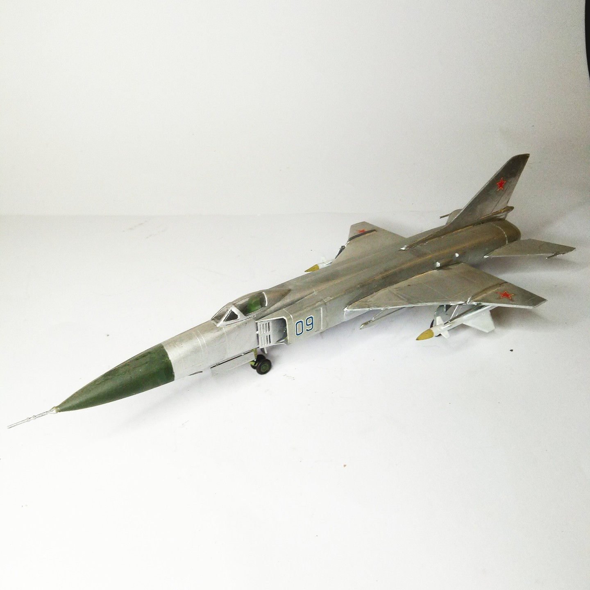

Aerei · scale model archive
Sukhoi Su21-F Flagon
Sukhoi Su21-F Flagon — Kit: Pioneer2, Scale: 1/72. First try with natural metal wings and tailplanes with aluminum foil #1/72 #Pioneer2

Photo gallery
English description
First try with natural metal wings and tailplanes with aluminum foil
#1/72 #Pioneer2
Descrizione italiana
Primo tentativo con ali in metallo naturale e piani di coda con foglio di alluminio.